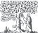
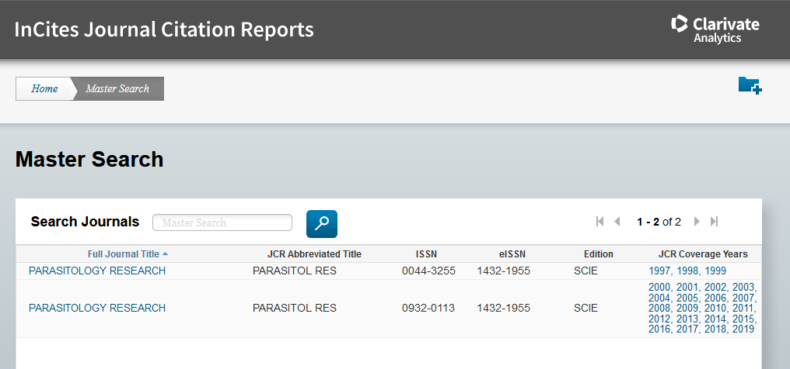
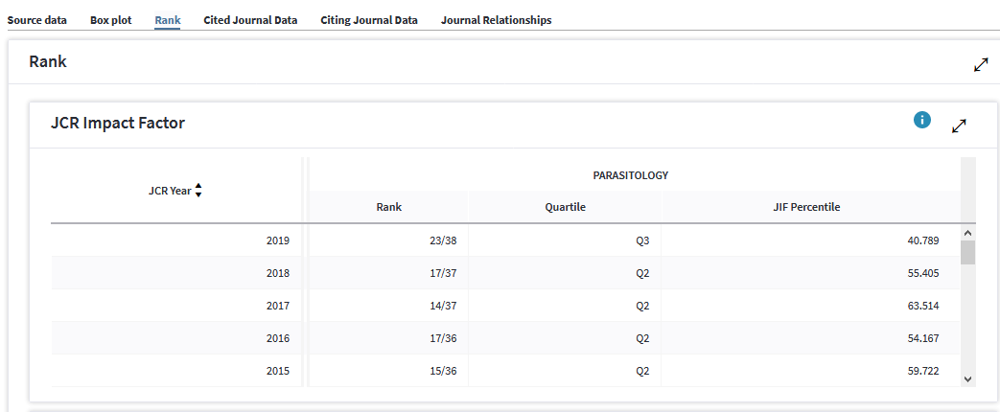

Анализ публикационного ландшафта
Содержание
Анализ публикационного ландшафта¶
В научно-образовательной среде разработаны инструменты для сравнения публикационных площадок (журналов) и областей знаний (наук) по публикационной активности. Основа учета - цитата. Цитата - признак востребованности публикации.
Цитирование происходит с отставанием: обычно 1-2 года после публикации наблюдается всплеск цитат, когда цитируют коллеги в теме. Затем 10 лет вялые цитаты от авторов обзоров и самоцитирования автора. Затем редкие цитаты узких специалистов. Если работа становится классической (открывает новую веху), то поток цитирований растет вместе с популярностью данного направления.
Исторически учет ссылок проводили реферативные журналы, крупные издательства. В настоящее время сервисы по учету цитирования, выросшие при крупных издательствах, отпочковались от них и финансируются независимо.

Индекс SJR (SCOPUS) - разработан при системе индексации журналов SCOPUS, которую поддерживает издательство Elsеvier (Нидерланды).
https://www.scimagojr.com/journalrank.php?area=3400
Индекс JIF (Web of Science) - используется в системе индексации журналов InCite от компании Clarivate, которая в 2016 году отпочковалась от издательства Thomson Reuters (США).
https://jcr.clarivate.com/JCRJournalHomeAction.action
Задачи для анализа издательского ландшафта:
Журналы из Западной и Восточной Европы - какие квартили? какой средний SJR?
Соотношение англо- и русскоязычных статей у автора в ходе карьеры.
Определение квартиля журнала¶
И европейская и американская системы учета цитирований тщательно следят за качеством журналов, ежегодно удаляя из индекса уличенные в мошенничестве или неактивные журналы, и добавляя молодые перспективные издания. Поэтому каждый год рейтинг пересчитывается. Рейтинг - это выстроенные по порядку журналы. Если весь ряд от самого престижного до самого кандидата на вылет из индекса разделить на четыре части, то получатся квартили, обозначаемые Q1, Q2, Q3, Q4.
В рейтинг кроме собственно журналов попадают разные периодические издания, сборники, труды конференций, у которых обычно меньше цитирований и ниже рейтинг.
Например, в индексе Скопус по теме Veterinary отбирается 312 изданий. На первом месте среди них - Annual Review of Animal Biosciences, на последнем - Zentralblatt fur Veterinarmedizin. Reihe A (немецкое издание). Журналы, публикующие обзоры (ревю), как правило много цитируют, и они стоят высоко в рейтинге. Журналы на национальных языках, расчитанные на узкую аудиторию, в общемировом рейтинге занимают слабые позиции. Многие журналы на русском языке вообще не входят в упомянутые базы цитирования. Много русскоязычных изданий учитывают в Российском индексе научного цитирования (РИНЦ). В рубрике Ветеринария https://elibrary.ru/rubric_titles.asp?rcode=684100 177 журналов.
Возьмем для примера журнал Parasitology Research, издаваемый в издательстве Springer-Verlag GmbH с 1928 года. Редакция журнала - в Нью-Йорке, США.

По запросу в Скопусе находятся четыре журнала - один тот, что искали - на 11-м месте из 178 по теме Ветеринария. 94-й перцентиль или 1-й квартиль.
Другой журнал - 40-й перцентиль по теме Инфекционные болезни, это 3-й квартиль (от 25 до 50%).
Еще два журнала с похожими названиями не входят в индекс цитирования. Они может издаются, но или некачественные или не находят широкого отклика (местячковые).

По запросу в ИнСайтс (WoS) находится только один журнал с покрытием с 1997 года.
Доступ только по подписке университета. На странице журнала нужно найти раздел с вкладками с разными показателями. И во вкладке Rank можно найти максимальные квартили по темам, которых достигал этот журнал в разные годы по версии WoS.

Если в Scopus этот журнал был в топе, то в WebOfScience - вплоть до прошлого года в Q2, а теперь понизился до Q3.